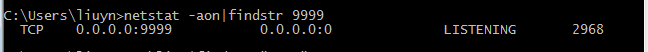
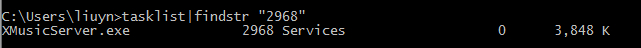

前言
开发过程中，时不时遇到让人哭笑不得的问题，为了不再同一个坑上跌倒，在这里记录一下。
Tomcat启动失败抛出zipException
今天遇到这样一个问题：
从一个服务器A上down了个war包（该程序在A上运行良好），然后上传到服务器B的Tomcat下，执行启动脚本后，后台日志提示”java.util.zip.ZipException: error in opening zip file“，明明是同样的war包啊！首先怀疑是运行环境有差异，看了JDK、Tomcat版本都没发现问题。最后还是另一个同事对比一下两个服务器上的war包发现问题的原因：”war不完整！WTF“。
Win7下查看被占用的端口
今天起个netty服务吧，发现9999端口被占用了，Linux下还好说，windows下就抓瞎了，网上搜了一下方法，这里做个记录。
-
查看占用端口的进程
$ netstat -aon|findstr 9999

-
找到进程对应的程序
$ tasklist|findstr 2968

日期：2014-04-17、2014-05-14
参考资料：win7下查看被占用端口